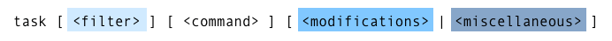
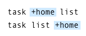
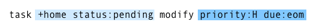
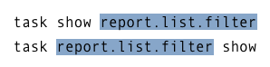
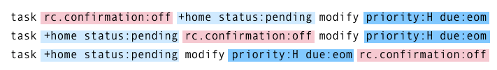

Introduction
What is Taskwarrior?
Taskwarrior manages your TODO list from your command line. It is flexible, fast, efficient, unobtrusive, does its job then gets out of your way.
Taskwarrior scales to fit your workflow. Use it as a simple app that captures tasks, shows you the list, and removes tasks from that list. Leverage its capabilities though, and it becomes a sophisticated data query tool that can help you stay organized, and get through your work.
Taskwarrior is an active project, and we fix bugs, improve and add features almost every day.
Why Choose Taskwarrior?
Five good reasons to use Taskwarrior
-
Are you a command line user looking for an unobtrusive, fast, efficient, flexible tool to let you easily manage your task lists? Taskwarrior is low-friction by design, allowing you to capture the details, and get right back to work.
$ task add Prepare the first draft of the proposal due:fridayTaskwarrior uses a natural and expressive command line syntax.
-
Taskwarrior is methodology-neutral. Whether you follow GTD, use the Pomodoro technique, or just do whatever works for you, Taskwarrior provides capabilities to help you, not restrict you.
-
Taskwarrior has an active and friendly community, providing support and various forms of help to new and experienced users. Start here for a list of support options. Need an immediate answer - check your man pages and online docs. Need to ask someone a question? try IRC #taskwarrior on libera.chat.
-
Taskwarrior is open in as many ways as it can be:
- It is free and open source, using the MIT license
- It uses human-readable text files for storage. It imports and exports JSON, so your data is never held captive
- There is DOM access and a Hook script API
- There are many available free and open extension scripts
- There is Vit, a curses-based UI
- There is FreeCinc, a free online sync service
- There is Inthe.AM, a free online sync service, web UI and iOS client
- There is BugWarrior, so you can import your bug issues from a dozen different bug systems
-
Taskwarrior is an active, vibrant project. In the last year, it has averaged 5.58 changes per day. Taskwarrior enjoys lively participation from many contributors, with currently over 60 providers of code patches. But there are even more contributors (252 of them) helping out with documentation, bugs, support, ideas, requests and extensions. It's just going to keep getting better.
A Quick Demonstration
Let's see Taskwarrior in action. We'll first add a few tasks to our list.
$ task add Buy milk
Created task 1.
$ task add Buy eggs
Created task 2.
$ task add Bake cake
Created task 3.
Now let's see the list.
$ task list
ID Description
-- -----------
1 Buy milk
2 Buy eggs
3 Bake cake
3 tasks.
Suppose we bought our ingredients and wish to mark the first two tasks as done.
$ task 1 done
$ task 2 done
$ task list
ID Description
-- -----------
1 Bake cake
1 task.
Those are the first three features, the add, list and done commands, but they represent all you really need to know, to get started with Taskwarrior.
But there are hundreds of other features, so if you learn more, you can do more. It's entirely up to you to choose how you use Taskwarrior: stick to the simple three commands above, or learn about sophisticated filtering, custom reports, user-defined metadata, color rules, hook scripts, syncing and many more.
Get your copy
There are several ways for you to get a copy of Taskwarrior:
- Install a binary package. Your operating system probably already has a binary package available. These packages are usually named 'task'.
- Download a release tarball, from here, then make sure you have libuuid-dev (may be called uuid-dev) and gnutls-dev installed. Then using cmake, GCC 4.7 / Clang 3.3, build Taskwarrior.
- Using git, clone the code repository, switch to the current development branch, and build Taskwarrior.
What's next?
Probably the most important next step is to simply start using Taskwarrior. Capture your tasks, don't try to remember them. Review your task list to keep it current. Consult your task list to guide your actions. Develop the habit.
It doesn't take long until you realize that you might want to modify your workflow. Perhaps you are missing due dates, and need more defined deadlines. Perhaps you need to make greater use of tags to help you filter tasks differently. You'll know if your workflow is not really helping you as much as it could.
This is when you might look closer at the docs and the recommended Best Practices.
Welcome to Taskwarrior.
Configuration
Hello, and welcome to Taskwarrior. This is the first of many tutorials, and covers first-time use.
First Time Use
As a first-time user, you are going to need a configuration file and a data directory. Taskwarrior will create both of these for you, in your home directory, the first time you run Taskwarrior. Here is an example:
$ task version
A configuration file could not be found in ~
Would you like a sample /home/alice/.taskrc created, so taskwarrior can
proceed? (yes/no) yes
task 2.4.4 built for linux
Copyright (C) 2006 - 2016 P. Beckingham, F. Hernandez.
Taskwarrior may be copied only under the terms of the MIT license, which may
be found in the taskwarrior source kit.
Documentation for taskwarrior can be found using 'man task', 'man taskrc',
'man task-color', 'man task-sync' or at https://taskwarrior.org
Answer yes to the question. After creating the missing file and directory, you'll see the current version displayed. The configuration file that was just created contains very little.
$ cat ~/.taskrc
# \[Created by task 2.4.4.dev 7/12/2015 09:09:09\]
# Taskwarrior program configuration file.
# For more documentation, see https://taskwarrior.org or try 'man task',
# 'man task-color', 'man task-sync' or 'man taskrc'
# Here is an example of entries that use the default, override and blank values
# variable=foo -- By specifying a value, this overrides the default
# variable= -- By specifying no value, this means no default
# #variable=foo -- By commenting out the line, or deleting it, this uses the default
# Use the command 'task show' to see all defaults and overrides
# Files
data.location=~/.task
# Color theme (uncomment one to use)
#include /usr/local/share/doc/task/rc/light-16.theme
#include /usr/local/share/doc/task/rc/light-256.theme
#include /usr/local/share/doc/task/rc/dark-16.theme
#include /usr/local/share/doc/task/rc/dark-256.theme
#include /usr/local/share/doc/task/rc/dark-red-256.theme
#include /usr/local/share/doc/task/rc/dark-green-256.theme
#include /usr/local/share/doc/task/rc/dark-blue-256.theme
#include /usr/local/share/doc/task/rc/dark-violets-256.theme
#include /usr/local/share/doc/task/rc/dark-yellow-green.theme
#include /usr/local/share/doc/task/rc/dark-gray-256.theme
There is only one entry in this file for data.location. This is because Taskwarrior has a built-in set of sensible defaults, and this configuration file only contains overrides to those defaults.
That configuration variable named data.location points to your task data directory, which is currently empty:
$ ls ~/.task
$
This is because there are no tasks yet. Typically you won't need to look in that directory.
30-Second Tutorial
Let's get started. Here's a quick demonstration showing how to perform basic task management.
Here is an explanation of what is happening. First add two tasks.
$ task add Read Taskwarrior documents later
Created task 1.
$ task add priority:H Pay bills
Created task 2.
Easy. Do you see that second one has a High priority? Now look at those tasks, using the report next. Notice that the two tasks are ordered by urgency, and the urgency is affected by the priority, among other things.
$ task next
ID Age P Description Urg
-- --- - -------------------------------- ----
2 10s H Pay bills 6
1 20s Read Taskwarrior documents later 0
Suppose the bills are paid and we wish to mark task 2 as completed.
$ task 2 done
Completed task 2 'Pay bills'.
Completed 1 task.
Now we can omit the next command, because it is the default command.
$ task
ID Age Description Urg
-- --- -------------------------------- ----
1 5m Read Taskwarrior documents later 0
Task 2 is now gone. Notice that no visible tasks have a priority set, and so the priority column is not shown. Now we can delete that remaining task, because we are already using the tutorial.
$ task 1 delete
Permanently delete task 1 'Read Taskwarrior documents later'? (yes/no) y
Deleting task 1 'Read Taskwarrior documents later'.
Deleted 1 task.
$ task
No matches.
That is all you need to know. These four commands (add, done, delete, next) will allow you to use Taskwarrior effectively. If you are new to Taskwarrior, it is recommended that you stop here, go and start to manage your task list for a while. We don't want you to be overwhelmed at a time when you just need a way to organize and get things done.
When you are comfortable with basic Taskwarrior usage, there are many other features you can learn about. While you are not expected to learn all of them, or even find them useful, you might just find exactly what you need.
Getting Help
There are several forms of help available. All support avenues are listed at the Support page.
https://taskwarrior.org
If you find you have any questions, you can get answers in several ways. The website has user forums, issue tracking and online documentation, including this tutorial.
There is also a Command reference PDF that we recommend you download and use. It shows all the supported commands and options at a glance.
FAQ
Take a look at the FAQ - you may find your question has already been asked and answered.
IRC #taskwarrior on libera.chat
You can join the Taskwarrior IRC channel to pose questions, or join in the discussion.
You can submit your request by email. If you have a problem, please run the diagnostic command (below) and include that output, as it helps with the analysis. Please also describe what you expected and what you saw.
task help
There is a built in help page which summarizes commands, reports and other details.
man task
Finally, you have several man pages installed that contain all the written documentation, including this tutorial. The main man page offers syntax and command help.
man taskrc
The taskrc page describes all the supported configuration options (and there are many), which you can use to customize the behavior of taskwarrior.
man task-color
Use of color, color rules and themes are described in the task color page.
man task-sync
This page describes the various sync alternatives, with examples to help you keep your tasks lists up to date.
task diagnostics
If you find a bug, or even suspect you found a bug, please let us know. Ideally you would send an email to [email protected], describe the problem, and include information about your installation. The diagnostics command provides the details needed to diagnose the problem.
Command Line Syntax
Taskwarrior has a flexible command line syntax, but it may not be clear at first what the underlying structure means. Here is the general form of the syntax:

There are four parts to the syntax (filter, command, modifications, and miscellaneous), and each part is optional.
Command
Each time you run Taskwarrior, you are issuing a command either explicitly, or implicitly with the default command (the default.command configuration setting). The command you specify determines how the command line is understood by Taskwarrior. Here are some examples of that:

The first example, task list is a report with no filter, and the second, task +home list is with a filter. The third, task 12 modify project:Garden has both a filter and modifications. The last example, task show editor has a miscellaneous argument.
Taskwarrior looks for the first argument on the command line that looks like an exact command name, and failing that, looks for an abbreviated command name. It is better to use the full name of a command to avoid ambiguity.
It is the position of the command argument, and the type of command that determines how the arguments are understood.
Filter
A filter is a means of addressing a subset of tasks. Because filters are optional, the simplest case is no filter. A command with no filter addresses all tasks.
Generally filter arguments appear before the command, so any arguments to the left of the command are considered filter arguments.
There is a special case, in which a command that does not support modifications or miscellaneous arguments, expects only filter arguments, and so they can appear before or after the command, without confusing Taskwarrior:

Modifications
If a command accepts modifications, they generally appear after the command. Most commands that accept modifications also accept filters, and so the filter arguments appear before the command, while the modifications appear after. Here is an example:

This command specifies a compound filter, consisting of more than one term. These terms are logically combined with an and operator by default, unless otherwise specified. In this case, tasks that have both the home tag, and a status value of pending are to be modified.
The modifications, appearing after the command, set the priority to High, and the due date to the end of the month (eom).
Because the filter is evaluated at runtime, we don't know how many tasks will be modified. It could be none, one, many or all of the tasks. It could be determined with:
task +home status:pending count
The user writing this command would have an idea of how many tasks this will affect, but this is just an example, with no contextual data shown.
Miscellaneous
Some commands accept neither a filter, nor modifications, but do accept miscellaneous arguments. An example is the show command, that queries configuration settings, and does not accept a filter:

This is another special case, in which the command only accepts miscellaneous arguments, and so they can appear before or after the command.
Overrides
Overrides are temporary values for configuration settings, and can be specified anywhere on the command line, because they are not considered to be either filter, modification or miscellaneous. In fact, the command itself doesn't see the overrides, instead they are handled before the command runs.

There can be any number of overrides on the command line, and they have no effect on the syntax.